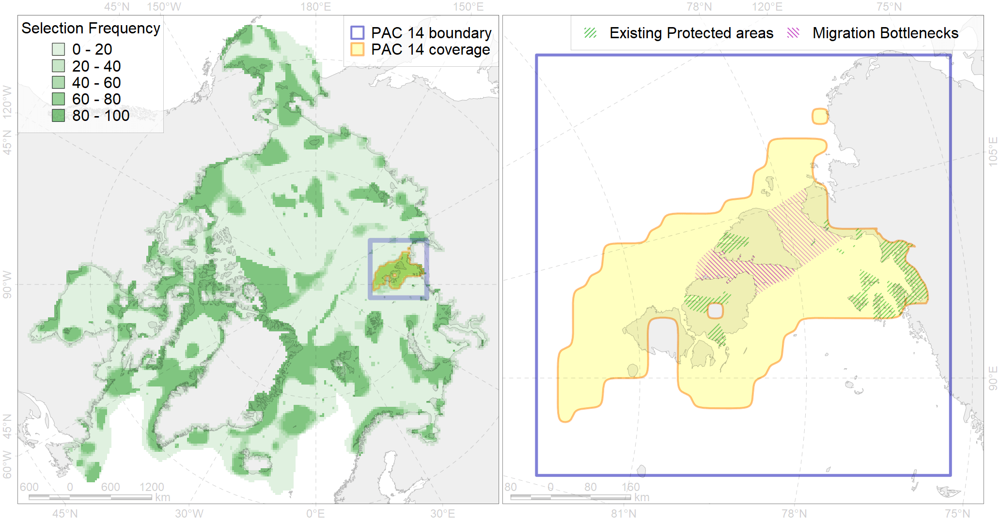

Region 14
Region 14
“ArcNet” scenario 33 achievement for region 14.
Use Accenter for advanced mode.

1
CFs inside of Region completely
17
CFs inside of Region at quarter
19
Complete-targets achievement by Region
34
Half-targets achievement by Region
| CF | Name | Target Achievement for Region | Proportion of Target Achievement in Region | Amount Proportion in Region |
|---|---|---|---|---|
| 7251 | 7251 Severnaya Zemlya kelp patches | 320.8% | 100.0% | 100.0% |
| 3002 | Fast Ice distribution in the Severnaya Zemlya region | 1459.4% | 98.8% | 97.5% |
| 8043 | Severnaya Zemlya glacial termini | 165.7% | 96.3% | 92.9% |
| 7111 | II.1.1.5. Severnaya Zemlya domain | 656.4% | 94.7% | 89.6% |
| 3110 | polynya SZ | 363.2% | 91.4% | 84.1% |
| 3111 | polynya Laptev W | 264.6% | 81.5% | 62.1% |
| 3028 | Marginal Ice Zone distribution in April in the Laptev Sea LME | 439.8% | 74.7% | 60.0% |
| 6038 | Ivory gull (Pagophila eburnea) Kara Sea breeding colonies | 79.4% | 73.3% | 53.3% |
| 7116 | II.1.2.1. Kara Sea slope | 82.3% | 80.6% | 50.7% |
| 7220 | Kara Sea kelp patches (20, 21) | 163.3% | 95.1% | 50.0% |
| 3057 | Multiyear Ice distribution in September in the Laptev Sea LME | 249.0% | 91.0% | 49.8% |
| 3010 | Fast ice distribution in the Eastern part of the Kara Sea | 739.5% | 87.0% | 45.5% |
| 6097 | 6097 PagophileburneKaraSebreeding colonies | 74.5% | 74.4% | 36.0% |
| 7102 | II.1.1.11. Northern Taymur Canyon | 107.3% | 91.4% | 33.7% |
| 2013 | Bearded seal whelping areas in the Laptev Sea | 100.9% | 47.5% | 27.6% |
| 6006 | Brent goose (Branta bernicla bernicla) breeding&moulting grounds | 138.9% | 43.3% | 27.2% |
| 1013 | Laptev Walrus haulouts | 24.7% | 23.6% | 25.7% |
| 7101 | II.1.1.10. Laptev outer shelf | 153.5% | 93.4% | 24.6% |
| 7117 | II.1.2.2. Laptev Sea slope | 58.0% | 57.6% | 23.4% |
| 2049 | Ringed seal whelping areas in the Kara Sea | 87.2% | 46.1% | 23.1% |
| 6028 | Glaucous gull (Larus hyperboreus hyperboreus) breeding grounds | 161.6% | 25.4% | 22.1% |
| 9028 | polar bear denning areas of KS (Kara Sea) subpopulation | 35.9% | 35.7% | 21.9% |
| 9012 | polar bear of the LV (Laptev Sea) subpopulation distribution | 72.9% | 60.3% | 21.8% |
| 3056 | Multiyear Ice distribution in September in the Kara Sea LME | 91.8% | 70.5% | 19.5% |
| 6089 | 6089 Alle alle polaris breeding colonies | 44.5% | 26.2% | 18.1% |
| 7108 | II.1.1.2. Eastern Kara insular areas and banks at middle and outer shelf | 86.4% | 57.3% | 18.1% |
| 3038 | Marginal Ice Zone distribution in July in the Kara Sea LME | 63.0% | 49.0% | 17.4% |
| 7118 | II.1.2.3. Laptev Sea slope canyons | 60.1% | 51.5% | 16.9% |
| 9010 | polar bear of the KS (Kara Sea) subpopulation distribution | 44.3% | 43.2% | 13.5% |
| 6003 | Little Auk (Alle alle polaris) breeding colonies | 22.0% | 12.3% | 13.1% |
| 9030 | polar bear denning areas of LV (Laptev Sea) subpopulation | 21.2% | 21.2% | 12.8% |
| 7110 | II.1.1.4. Voronin Trough | 23.1% | 22.4% | 12.5% |
| 7026 | Eurasian shelf region | 120.0% | 48.9% | 12.1% |
| 6040 | Ivory gull (Pagophila eburnea) postbreeding grounds in the Barents and the Kara Sea | 45.8% | 21.5% | 11.5% |
| 5007 | Beluga of the Barents-Kara-Laptev Sea stock general distribution | 37.0% | 24.7% | 9.9% |
| 7109 | II.1.1.3. Middle and outer eastern shelf of Kara Sea | 116.7% | 60.8% | 7.9% |
| 4036 | Distribution of the Borisov’s Arctic cod (Arctogadus borisovi) (F33) | 54.3% | 23.9% | 7.9% |
| 3009 | Fast ice distribution in the Western part of the Laptev Sea | 104.1% | 27.6% | 7.5% |
| 3013 | Fast ice distribution in the Central part of the Kara Sea | 100.2% | 19.1% | 7.1% |
| 4090 | Fish zoogeography, Arctic Region, Subarctic Transitional-Atlantic Province, Euro-Asian Bathyal District | 38.0% | 21.1% | 7.1% |
| 5090 | Narwhal in the Russian Arctic assumed summer range | 45.7% | 26.4% | 6.6% |
| 4010 | Feeding area of the Muksun (Coregonus muksun) (F 15) | 18.9% | 18.6% | 6.6% |
| 2011 | Bearded seal whelping areas in the Kara Sea | 24.3% | 23.8% | 6.4% |
| 6099 | 6099 Rissa tridactyla tridactyla breeding colonies | 8.0% | 8.0% | 5.9% |
| 7115 | II.1.1.9. Laptev middle shelf | 32.3% | 17.4% | 5.4% |
| 7035 | Siberian shelf region | 58.3% | 16.6% | 5.3% |
| 3039 | Marginal Ice Zone distribution in July in the Laptev Sea LME | 18.7% | 16.0% | 5.1% |
| 1014 | Laptev Walrus Whelping patches | 15.5% | 6.6% | 4.9% |
| 4008 | Feeding / nursery area of the Arctic Cisco (Coregonus autumnalis), Eurasian populations (F 14) | 11.2% | 10.5% | 4.6% |
| 7025 | Eurasian bathyal region | 35.4% | 9.5% | 4.6% |
| 4058 | Range of the Arctic flounder (Liopsetta glacialis) (F48) | 69.2% | 8.9% | 4.5% |
| 2061 | Ringed seal circumpolar foraging areas as predicted by MIZ distribution | 16.6% | 8.7% | 4.5% |
| 4076 | Fish zoogeography, Arctic Region, High-Arctic Shelf Province, N Barents – Kara-Sea District | 55.4% | 14.3% | 4.4% |
| 7113 | II.1.1.7. Laptev shelf coastal domain | 23.8% | 13.0% | 3.9% |
| 4030 | Feeding area of the Arctic charr (Salvelinus alpinus), anadromous populations (F28) | 9.2% | 8.1% | 3.9% |
| 8021 | Kara Sea estuaries | 13.1% | 11.6% | 3.7% |
| 4018 | Feeding area of the Vendace, Least cisco (Coregonus sardinellа), Euro-Asian populations (F 20) | 12.8% | 6.7% | 3.4% |
| 4021 | Feeding area of the Inconnu (Stenodus leucichthys nelma), Euro-Asian populations (F 22) | 9.1% | 7.7% | 3.2% |
| 4014 | Feeding area of the Siberian whitefish (Coregonus pidschian) (F 18) | 11.0% | 6.9% | 2.9% |
| 4015 | Feeding area of the Broad whitefish (Coregonus nasus), American populations (F 19) | 7.9% | 6.7% | 2.8% |
| 4037 | Distribution of the Glacial cod (Arctogadus glacialis) (F34) | 24.7% | 6.0% | 2.5% |
| 7114 | II.1.1.8. Laptev inner shelf | 29.4% | 6.6% | 2.2% |
| 4052 | Range of the Fourhorn Sculpin (Myoxocephalus quadricornis) (F 45), American populations | 67.6% | 4.7% | 2.2% |
| 4061 | Feeding/nursery area of the Siberian sturgeon (Acipenser baerii) (F4) | 4.3% | 4.3% | 1.6% |
| 6015 | Black guillemot (Cepphus grylle mandti) breeding grounds | 11.4% | 2.4% | 1.5% |
| 6047 | Black-legged kittiwake (Rissa tridactyla pollicarius) breeding colonies | 2.0% | 1.8% | 1.5% |
| 4032 | Range of the Arctic skate (Amblyraja hyperborea) (F2) | 39.9% | 3.1% | 1.4% |
| 7100 | II.1.1.1. Eastern Kara coastal domain, outside of the Ob-Yenissean Estuary (see Fig. 3 for northern boundary of estuarine area) | 8.9% | 3.3% | 1.2% |
| 4077 | Fish zoogeography, Arctic Region, High-Arctic Shelf Province, Laptev – East-Siberian District (10D) | 8.0% | 4.2% | 1.2% |
| 4041 | Range of the Polar Cod (Boreogadus saida) (F35) | 7.8% | 3.0% | 1.1% |
| 7175 | VII.2. Amundsen and Nansen Basins VII.2.1. Rises (slope foot) | 4.6% | 4.5% | 0.8% |
| 4096 | Range of the Glacial eelpout (Lycodes frigidus) | 8.2% | 2.1% | 0.6% |
| 5112 | Arctic Cetaceans (beluga, bowhead, narwhal) winter habitats as predicterd by MIZ | 1.1% | 0.9% | 0.5% |
| 4079 | Fish zoogeography, Arctic Region, Arctic Abyssal Province (11A -Scandian, 11B - Central-Arctic and 11C - Baffin Deep-sea Districts ) | 10.1% | 1.7% | 0.5% |
| 4059 | Range of the Greenland Halibut (Reinhardtius hippoglossoides) (F 49) | 10.5% | 0.9% | 0.4% |
| 3114 | polynya Kara mainland | 2.9% | 0.7% | 0.4% |
| 7177 | VII.2.3. Abyssal hills | 2.8% | 2.6% | 0.4% |
| 4017 | Feeding/ migration area of the Greenland Shark (Somniosus microcephalus) (F1) | 0.7% | 0.4% | 0.2% |
| 9001 | polar bear of the AB (Arctic Basin) subpopulation distribution | 0.5% | 0.5% | 0.1% |
| 3027 | Marginal Ice Zone distribution in April in the Kara Sea LME | 0.9% | 0.2% | 0.1% |
| 3049 | Multiyear Ice distribution in September in the Central Arctic LME | 0.1% | 0.1% | 0.0% |
| 7017 | Amundsen and Nansen Basins abyssal region | 0.1% | 0.1% | 0.0% |
| 7176 | VII.2.2. Abyssal plains | 0.0% | 0.0% | 0.0% |